Where ancient wisdom meets emerging intelligence — a national dialogue on the responsible future of Artificial Intelligence.
A national platform bringing together thinkers, scholars, policymakers, and youth to explore how Artificial Intelligence can be guided by India's civilizational values for the benefit of all humanity.
India is at a pivotal moment. As Artificial Intelligence reshapes economies, governance, communication, and creativity, the question is not only how we deploy AI — but why, and for whom. This conclave asserts that technology alone is insufficient; it must be guided by ethical grounding, cultural sensitivity, and spiritual wisdom.
Organized by All World Gayatri Pariwar and Prantiya Yuva Prakoshth Bihar, this national conclave convenes extraordinary minds to address: How can India's ancient knowledge systems inform ethical AI? How do we preserve cultural identity in a digital age? What role can youth play in shaping responsible innovation?
The conclave at A.N. College, Patna is not merely a lecture — it is a declaration that conscience must lead computation.
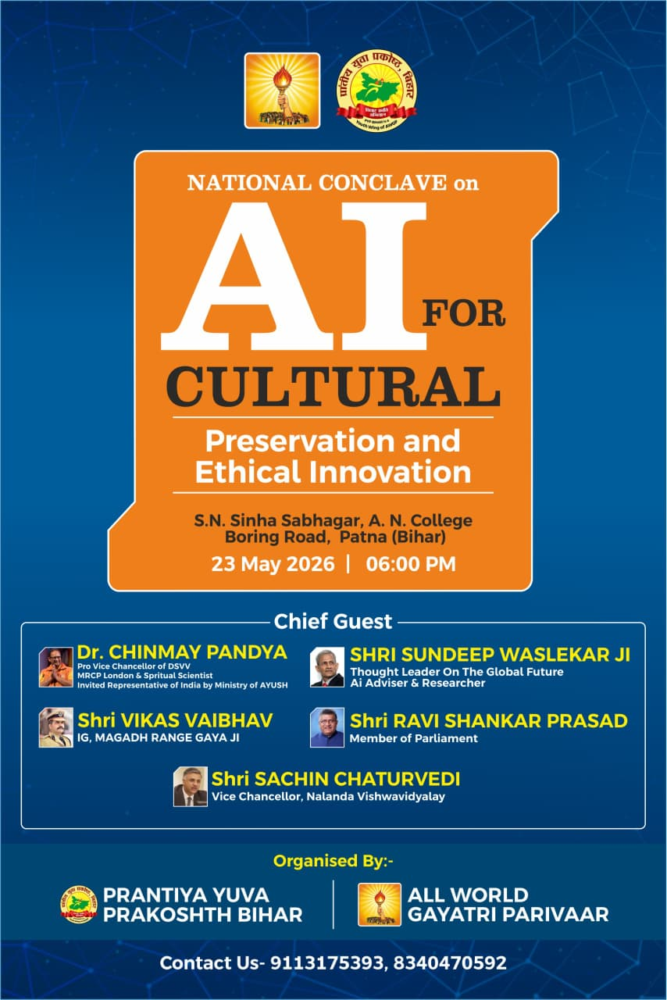
Pro Vice Chancellor, Dev Sanskriti Vishwavidyalaya · MRCPsych, London · AYUSH Representative · Global Voice for Ethical AI
"The question is not only how AI influences democracy, but how democracy influences AI. Technology must align with human values — and the greatest human value is trust."
Dr. Chinmay Pandya is one of India's most distinguished voices at the intersection of medicine, spirituality, governance, and Artificial Intelligence. As the Pro Vice Chancellor of Dev Sanskriti Vishwavidyalaya (DSVV) — India's premier university of values and Indian Knowledge Systems — he carries the vision of Yugrishi Pt. Shriram Sharma Acharya into contemporary global dialogue.
Trained as a psychiatrist in the United Kingdom with MRCPsych credentials from London, Dr. Pandya served in the NHS's West London Mental Health Trust specializing in dementia and older persons' care before returning to India to serve the transformative mission of All World Gayatri Pariwar. His rare combination of Western clinical training and deep Indian philosophical grounding makes him a uniquely credible voice.
In recent years, Dr. Pandya has emerged as a leading global thinker on ethical AI, AI governance, and the spiritual dimensions of technology. From the India AI Impact Summit at Bharat Mandapam to the Hiroshima Peace Memorial, from 10 Downing Street to the United Nations, he carries India's civilizational wisdom to the world's most consequential policy conversations.
"Uncontrolled AI is like Bhasmasura from Indian mythology — power without wisdom becomes destruction. India's spiritual traditions offer the ethical compass that AI civilization urgently needs."
— Dr. Chinmay Pandya at the International Conference on Faith & Future, DSVV, 2025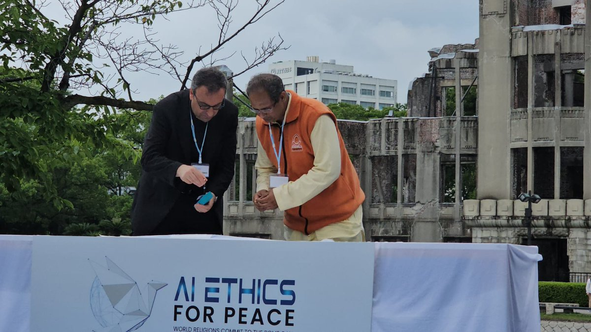
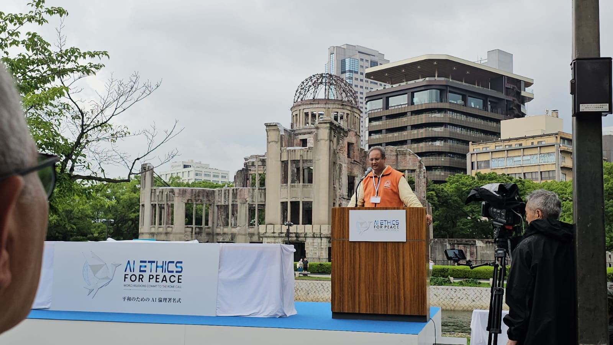
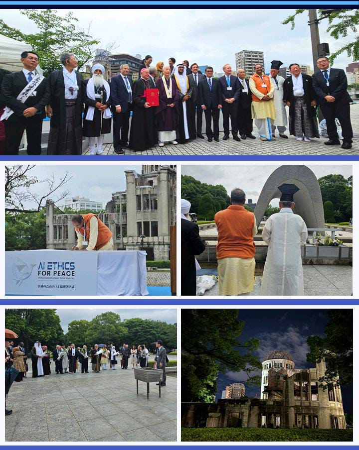
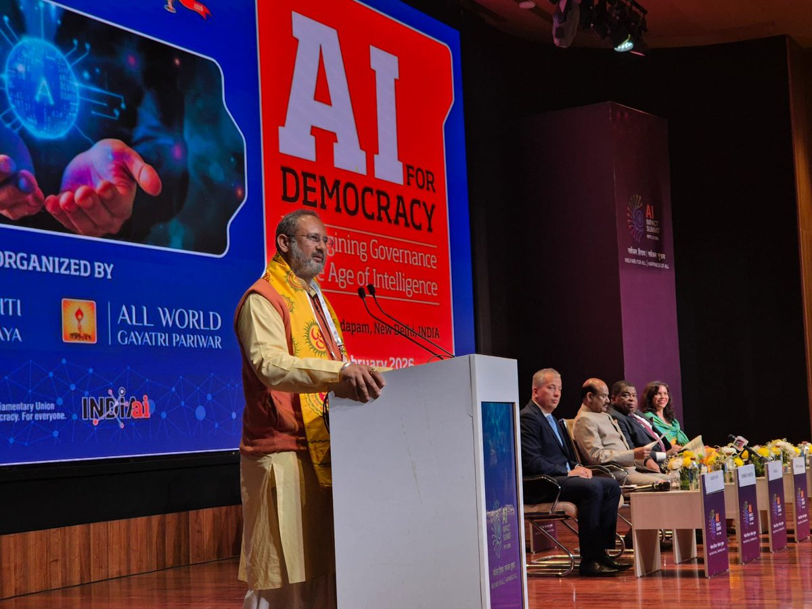
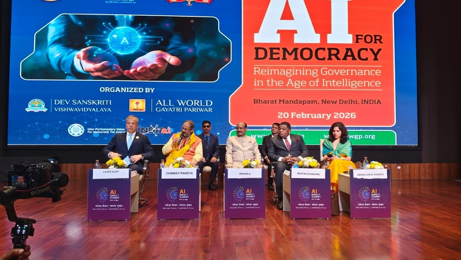
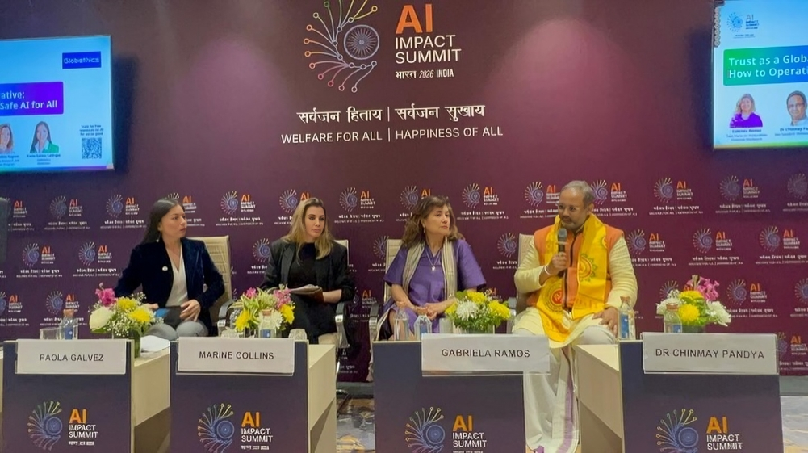
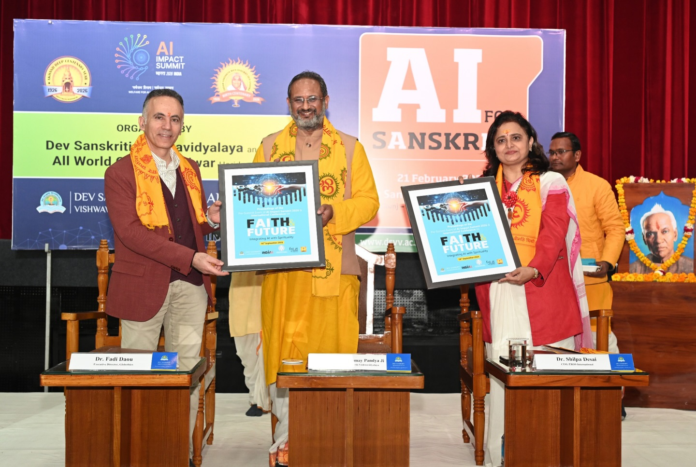
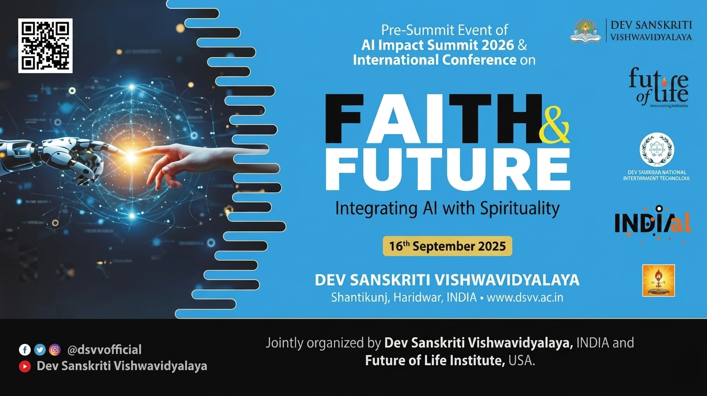
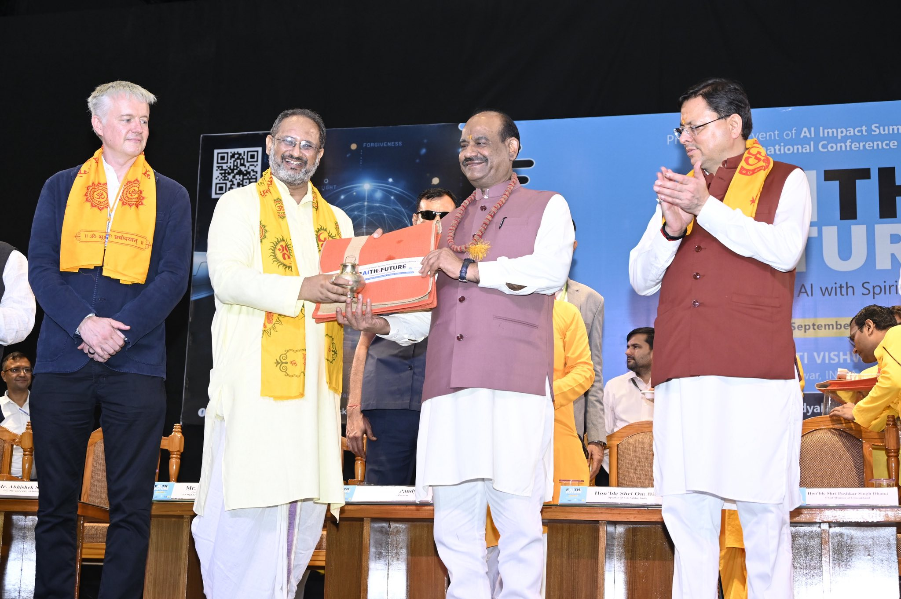
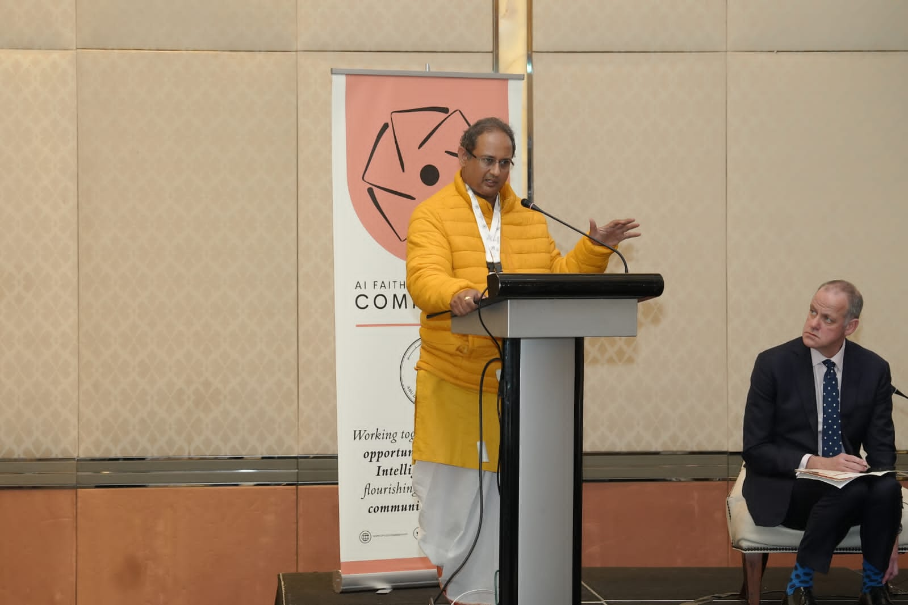
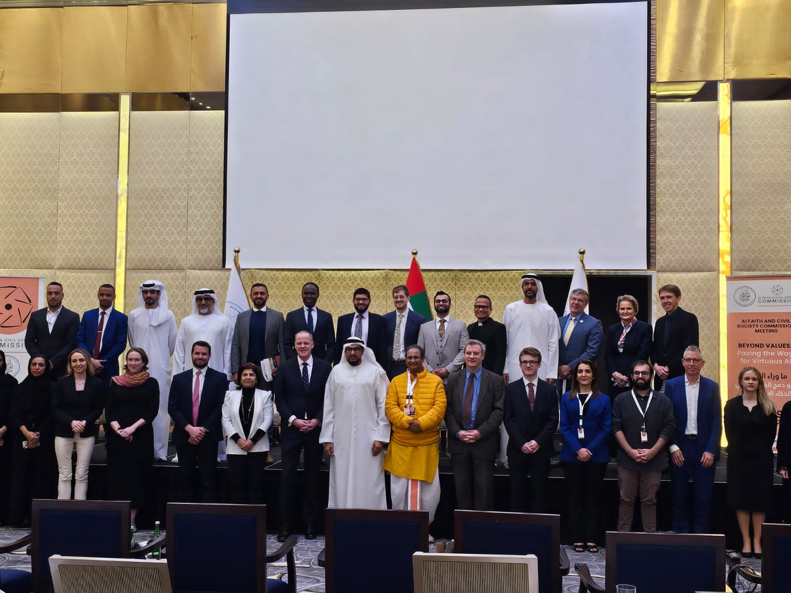
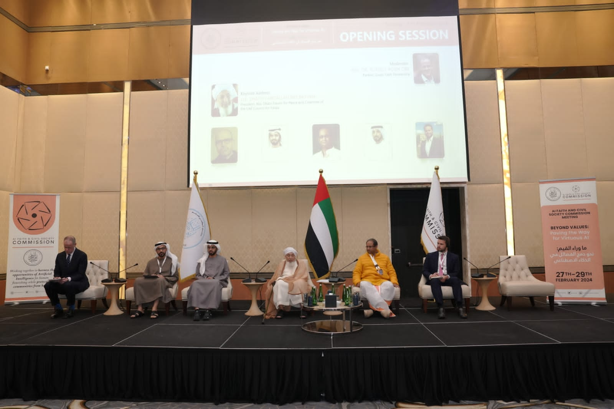
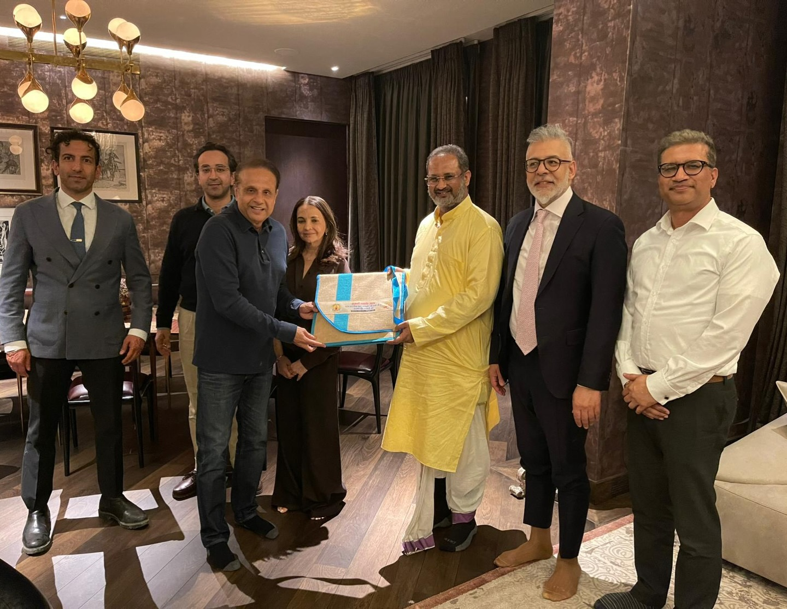
Leaders from parliament, academia, law enforcement, and global thought convening to address the most consequential question of our era.
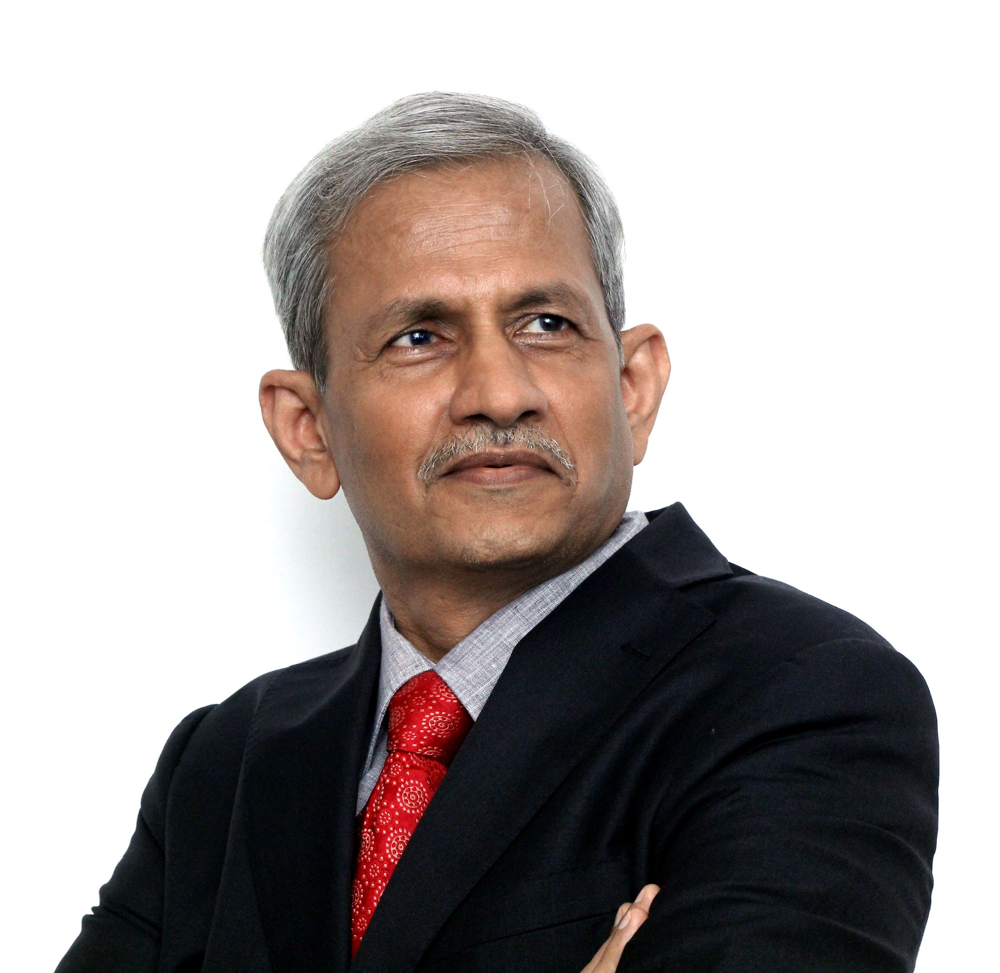
SW';">President of Strategic Foresight Group, a think tank that has shaped policy in 65 countries, and Senior Research Fellow at Oxford University. He has presented AI governance frameworks at the UN Security Council and global forums, advocating for equitable, value-based AI that includes Global South voices.
An IIT Kanpur alumnus and NIA counter-terrorism veteran, he served as Adviser to the Bihar State Planning Board before his current posting. A frontline voice on AI in governance, he has championed technology integration in policing, cybercrime, and public administration throughout his career.
As Union Minister for Electronics & IT, he launched India's national AI portal INDIAai and the Responsible AI for Youth programme, shaping the country's foundational AI policy. A senior parliamentarian and legal luminary, he has consistently argued that AI must serve as a tool for social inclusion — not just economic growth.
Vice Chancellor of Nalanda University and Director General of RIS (Ministry of External Affairs), he has authored 22+ books on development economics and global governance. At the United Nations, he has articulated Indian civilizational philosophy — including the Buddhist ideal of Jagathita (universal well-being) — as an ethical framework for technology and global AI governance.
What moral frameworks should govern AI systems? How can trust, accountability, and transparency be built into the design of technology?
Protecting linguistic diversity, traditional knowledge, oral heritage, and cultural identity from homogenization by global AI platforms.
How can Vedic philosophy, Ayurveda, yoga, and India's civilizational wisdom offer ethical frameworks for 21st-century technology?
Ensuring that AI systems serve democratic values — citizen participation, institutional accountability, and equitable access to innovation.
Inspiring India's youth to lead AI development with a grounding in character, values, and a sense of responsibility to society and humanity.
Two organizations united by a shared mission — serving humanity through spiritual wisdom, cultural pride, and transformative youth leadership.
Founded by Yugrishi Pt. Shriram Sharma Acharya, AWGP is one of the world's largest socio-spiritual movements with tens of millions of members across the globe. Rooted in the Gayatri Mantra and the philosophy of human transformation, AWGP works at the intersection of spirituality, culture, education, and social service — championing values-based development and India's civilizational legacy in the modern age.
The youth wing of AWGP in the state of Bihar, Prantiya Yuva Prakoshth Bihar mobilizes young leaders across the state for spiritual, cultural, and national development.
This event is open to all — students, faculty, policymakers, professionals, and citizens who care about the future of technology and culture. Entry is complimentary.
For inquiries, RSVPs, and further information about the National Conclave, reach us at:
📞 9113175393 📞 8340470592Come prepared to think deeply, connect meaningfully, and leave inspired.
Call for any queries